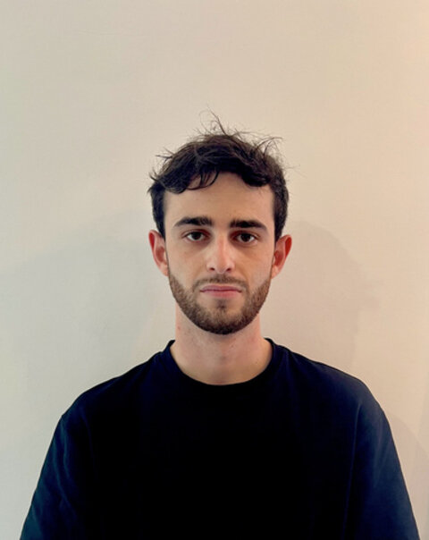

about
Learn fast, then innovate.
Five years of business school, then a deliberate switch to computer science at Epitech. That double background shapes how I work: start from a question worth answering, measure before claiming, and document the hypotheses that turned out wrong.

PoC Innovation · AI Lead
Leading research teams, not just projects.
Projects from the pole on this site
Event I co-organised
Projects
Every project here is documented, reproducible and evaluated. Open a card for the method, the numbers and the code.
Mathematical foundations
Earlier Epitech projects where the maths behind ML was written by hand.
Experience
Hackathons
Skills
Pick a skill to see the projects where I used it.
Languages: French (native), English C1 (Duolingo English Test 115).
Let's build something that learns.
A research topic, an internship, a collaboration? Based in Lyon, open to remote work and to moving.